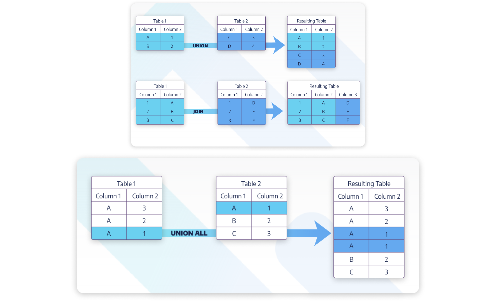

con_yelp <- DBI::dbConnect(
RMariaDB::MariaDB(),
dbname = "yelp",
host = Sys.getenv("SMITH_HOST"),
user = Sys.getenv("SMITH_USER"),
password = Sys.getenv("SMITH_PWD")
)4 Combining tables in SQL
Beyond SELECT queries, the next most fundamental actions in SQL have to do with working with two or more tables simultaneously. If you have worked in R, you may be familiar with the join_() family of functions. Moving beyond JOIN, we will also cover subqueries which create temporary tables inside a SQL statement.
The database we’ll work with for learning how to combine tables is on Yelp reviews. There are three tables: businesses, reviews, and users, see Table 4.1. From the EXPLAIN output Table 4.2, Table 4.3, Table 4.4, we can see that the tables match up by ID. The variable id in the businesses table is the same as the variable business_id in the reviews table. user_id is the same variable in both the reviews and users tables. The connections across the tables will be important when performing JOINs.
SHOW TABLES;| Tables_in_yelp |
|---|
| businesses |
| reviews |
| users |
EXPLAIN businesses;| Field | Type | Null | Key | Default | Extra |
|---|---|---|---|---|---|
| id | varchar(22) | NO | PRI | ||
| name | varchar(255) | NO | |||
| stars | smallint | NO | |||
| open | varchar(5) | NO | |||
| review_count | smallint | NO | |||
| city | varchar(255) | NO | |||
| longitude | decimal(15,12) | NO | |||
| latitude | decimal(15,12) | NO |
EXPLAIN reviews;| Field | Type | Null | Key | Default | Extra |
|---|---|---|---|---|---|
| business_id | varchar(22) | NO | MUL | ||
| user_id | varchar(22) | NO | MUL | ||
| stars | smallint | NO |
EXPLAIN users;| Field | Type | Null | Key | Default | Extra |
|---|---|---|---|---|---|
| user_id | varchar(22) | NO | PRI | ||
| name | varchar(255) | NO | |||
| average_stars | decimal(3,2) | NO | |||
| review_count | smallint | NO |
4.1 JOIN
Recall that SQL is a programming language that works on relational databases. One of its major strengths is being able to efficiently store information in separate tables that can be easily connected as needed. The syntax for tying together information from multiple tables is done with a JOIN clause.
Each JOIN clause needs four specific pieces of information:
- The name of the first table you want to
JOIN. - The type of
JOINbeing used. - The name of the second table you want to
JOIN. - The condition(s) under which you want the records in the first table to match records in the second table.
Some types of JOINs available in MySQL include the following, which are represented as Venn diagrams in Figure 4.1.
-
JOIN: include all of the rows that exist in both tables (similar toinner_join()in R, the intersection of the two tables).INNER JOINis alternative, and identical, function toJOIN. -
LEFT JOIN: include all of the rows in the first table. Connect them, as much as possible, to the rows in the second table. Rows that have no match in the second table will have a value ofNULLfor the new “second table” variables. -
RIGHT JOIN: include all of the rows in the second table. Connect them, as much as possible, to the rows in the first table. Rows that have no match in the first table will have a value ofNULLfor the new “first table” variables. ARIGHT JOINwith the tables in the opposite order is the same as aLEFT JOINwith the tables in the original order. -
FULL OUTER JOIN: include all rows in either table. Rows that have no match in the other table will have a value ofNULLfor the other table variables. -
CROSS JOIN: match each row of the first table with each row in the second table.
Figure 4.1 shows Venn diagrams of the different types of joins. Figure 4.2 shows four of the JOIN functions with mini data tables. Note that in SQL the missing values will be labeled as NULL (not NA).


4.2 UNION

4.3 Subqueries
A SQL subquery is a query used as a data source in the FROM clause, instead of the usual table. There was a subquery in Section 3.2 when the task required a function of the results set within the SELECT clause.
It is always a good idea to terminate the SQL connection when you are done with it.
dbDisconnect(con_yelp)